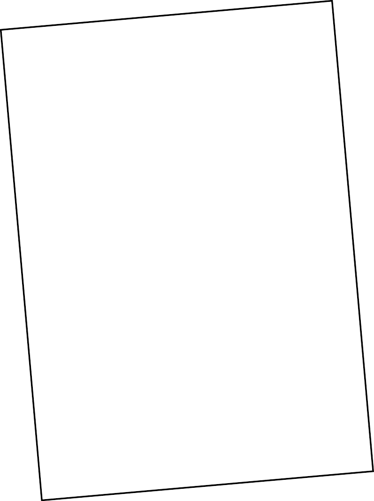
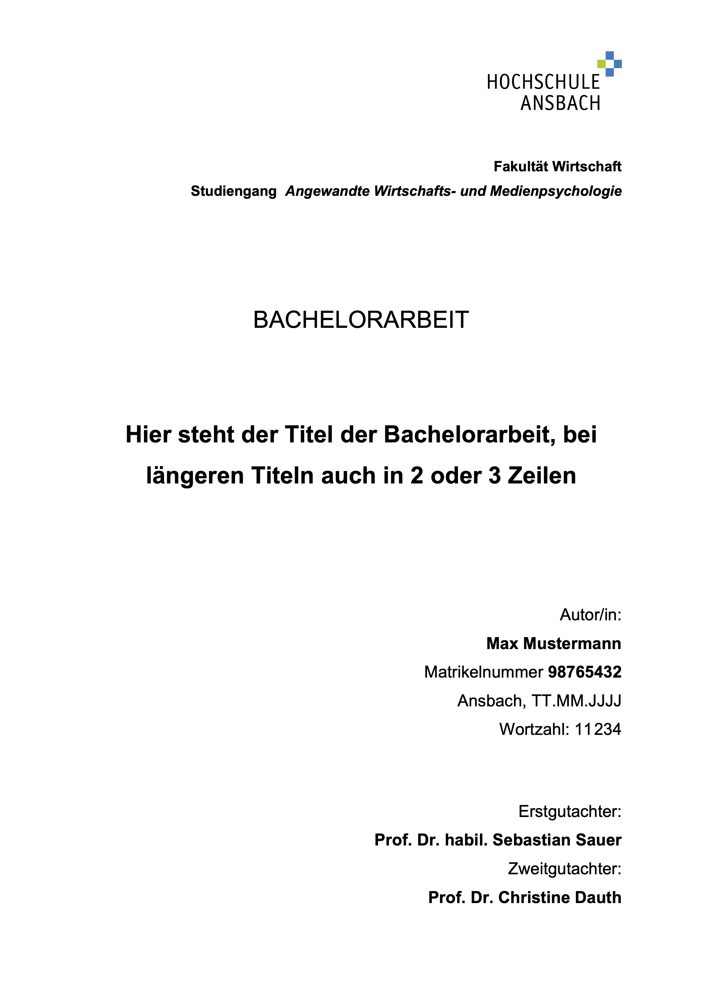
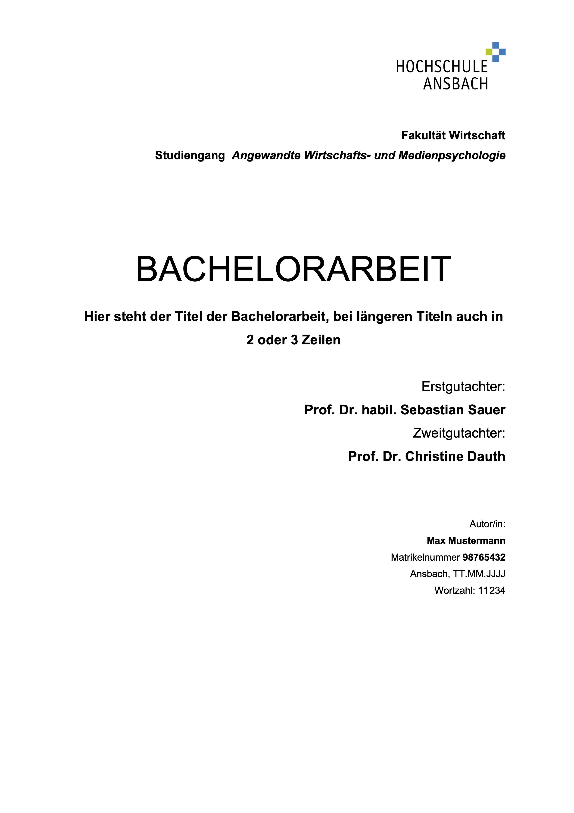
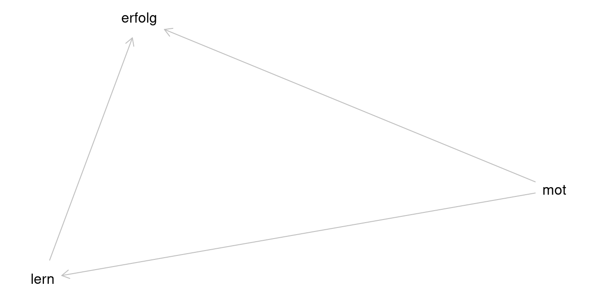

flowchart TD subgraph A[Falsch] L[Lesen] --> S[Schreiben] end subgraph B[richtig] L2[Lesen] <--> S2[Schreiben] end
4 Schreiben
Schlüsselwörter
Versuchsplanung, Statistik, R, Datenanalyse, Psychologie, Forschung
4.1 Lernsteuerung
4.1.1 Lernziele
- Sie wissen, wie man einen Theorieteil aufbauet.
- Sie wissen, wie man eine Forschungsarbeit gliedern kann.
- Sie kennen die Prinzipien des wissenschaftlichen Schreibstils.
4.1.2 Position im Lernpfad
Sie befinden sich im Abschnitt “Schreiben” in Abbildung 1.2. Behalten Sie Ihren Fortschritt im Projektplan im Blick, s. Abbildung 1.3.
4.1.3 Überblick
Dieses Kapitel gibt eine Einführung in das wissenschaftliche Schreiben. Es empfiehlt sich, einschlägige Literatur zur Vertiefung zu konsultieren.
4.1.4 Benötigte Software
In diesem Kapitel benötigen Sie R (mit RStudio und einigen Paketen, s.u.), Word und Zotero.
Übungsaufgabe 4.1 (Mindmap zu Büchern des wissenschaftlichen Arbeitens) Wissenschaftliches Schreiben ist ein Teilgebiet des wissenschaftlichen Arbeitens. Daher ist es nützlich, entsprechende Bücher zu konsultieren. “Konsultieren” soll hier andeuten, dass Sie nicht einfach alle Bücher zu dem Thema von vorne nach hinten lesen, sondern dass Sie sich einen intelligenten Überblick verschaffen. Ein Weg dazu ist, ein Mindmap der Gliederung (bzw. ihrer wesentlichen Punkte) eines Buches zu erstellen. Das ist Ihre Aufgabe in dieser Übung.
Recherchieren Sie ein Buch zum wissenschaftlichen Arbeiten und erstellen Sie eine Gliederung! Sie können ein Buch aus dieser Liste wählen:
4.2 Gliedern
4.2.1 Gliedern Sie Ihren Schreibprozess
Okay, Sie haben viel gelesen. 1, 10, 100, sagen wir 30 Fachartikel. Gut. Was jetzt? Fertig mit Lesen, los geht’s mit Schreiben?!
Nein (s. Abbildung 4.1). Lesen und Schreiben sollten sich abwechseln.
Es bietet sich an, frühzeitig mit (etwas) Schreiben zu beginnen. Hilfreich ist es, wenn Ihre Gliederung sauber ausgearbeitet ist. Dann haben Sie nur einen überschaubaren Abschnitt zu formulieren. Und vor allem: Wenn Sie mit dem Formulieren (d.h. Schreiben) beginnen, ist die Schwerarbeit bereits getan: Das Denken. Sie werden sich also (verhältnismäßig) leicht tun mit dem Schreiben.
Ein nicht zu unterschätzender Nutzen des Schreibens ist, dass er die Gedanken sortiert. Man könnte zugespitzt sagen: Der Nutzen des Schreibens ist nicht das Schreiben, sondern das Unterstützen beim Denken.
4.2.2 Horror vacui: Die Angst vor dem leeren Blatt
Beim Schreiben ist es nicht unüblich, vor dem “leeren Blatt” zu sitzen, und keinen Anfang zu finden: Das Blatt ist leer, bleibt leer und schaut einen noch dazu vorwurfsvoll an. Eine schreiende Stille, gewissermaßen, s. Abbildung 4.2. Es ist offenbar schwer, den Anfang zu finden, wenn man einen Text schreiben will. Vielleicht ist auch nicht nur der Anfang schwer, sondern der ganze Weg?

Was ist der Grund für diese Schwierigkeit, dieser “Angst vor dem leeren Blatt”?
Der Grund liegt im Versuch, alle Teilaufgaben des Schreibens auf einmal machen zu wollen. Die Teilaufgaben des Schreibens sind:
- Die zentralen Ideen (z. B. Forschungsfrage) klar haben
- Die Gliederung des Textes klar haben
- Die Belege und Quellen klar haben
- Beispiele und Details parat haben
- Die Argumentation muss vorbereitet (klar) sein
- Die Formulierungen des Textes müssen treffend, kurz und angenehm formuliert sein
- Die Rechtschreibung (inkl. Zeichensetzung) muss korrekt sein
- Die Formatierung des Textes muss ansprechend sein
Diese Teilaufgaben alle gleichzeitig ableisten zu wollen, muss in der Überforderung führen. Bei allen Schreibenden. Alle Teilaufgaben gleichzeitig anzugehen ist der sichere Weg zum leeren, leer bleibenden Blatt.
Der Weg zum Erfolg besteht darin, diese Teilaufgaben oder Anforderungen des Schreibens nacheinander anzugehen, sie zu sequenzieren. Verzichten Sie komplett auf “Alles auf Einmal”, auf gleichzeitiges (parallels) Arbeiten.
4.2.3 Gliederung einer Forschungsarbeit
Wie bei vielen Dingen des wirklichen Lebens, so gibt es auch für eine Gliederung einer wissenschaftlichen Arbeit nicht nur eine Lösung. Das bedeutet aber nicht, dass jede Lösung gleich gut wäre (wie im wirklichen Leben auch). Für eine empirische, quantitative Arbeit z. B. in der Psychologie ist folgende Gliederung des Hauptteils etabliert, s. Abbildung 4.6.
flowchart LR Einleitung --> Theorie --> Methode --> Ergebnisse --> Diskussion
- Einleitung
- Forschungsproblem, Forschungsfrage
- Relevanz des Themas
- Ggf. aktuelle oder persönliche Bezüge
- Theorie
- Forschungsstand (Theorien, Befunde) zu den Hypothesen
- Darstellung von Theorie, Belegen (Forschungsbefunden) und Ihrer Bewertung
- Methode
- Alles empirisches “Handwerkszeug”, das man braucht, um die Studie nachzuvollziehen (reproduzieren)
- Ergebnisse
- Deskriptive Ergebnisse
- Modellierung und Inferenzstatistik
- sonstige (explorative) Befunde
- Diskussion
- Zusammenfassung des Vorgehens und der Ergebnisse
- Interpretation
- Einordnung der Ergebnisse in die Literatur
- Kritische Auseinandersetzung mit der Studie
- Ausblick
- Transfer
Ein fünfschrittiger Ablauf, die klassische Gliederung sozusagen, die auch für eine studentische Arbeit (empirisch, quantitativ, sozialwissenschaftlich) empfehlenswert ist. Für jeden der fünf Schritte ist grob angegeben, was man in jeweiligen Teil schreien kann.
Aber der Hauptteil macht nicht die ganze Arbeit aus, er ist sozusagen in einen Vorspann und Nachspann eingebettet:
- Titelblatt
- ggf. Sperrvermerk
- Abstract
- Abbildungs- und Tabellenverzeichnis
- Inhaltsverzeichnis
- Hauptteil
- Literaturverzeichnis
- ggf. Anhang
- Ehrenwörtliche Erklärung
🧑🎓 Wie groß ist der Teil XYZ?
👨🏫 Tabelle 4.1 Tabelle 4.1 gibt Ihnen eine grobe Richtlinie, wie groß der Anteil der verschiedenen Kapitel des Hauptteils sind.
| Anteil | Kapitel | Kommentar |
|---|---|---|
| 5% | Einleitung | Die Einleitung ist kurz zu halten (ca. 1 Seite) |
| 40%-60% | Theorie | Der Theorieteil ist das längste Kapitel |
| 10% | Methode | Verwendet man ungewöhnliche oder wenig standardisierte Methoden, so wird der Methodenteil umfangreicher |
| 10%-30% | Ergebnisse | Im Methodenteil sollten keine Analyseverfahren erläutert werden, sofern diese (dem avisierten Auditorium) allgemein bekannt sind. |
| 10%-30% | Diskussion |
Übrigens passen auf eine Textseite ca. 300 Wörter.
4.3 Abschnitte
4.3.1 Titelseite
So könnte eine Titelseite aussehen, s. Abbildung 4.4.

Die Titelseite beinhaltet …
- den Titel der Arbeit
- den Namen der Hochschule und des Studiengangs
- bei einer Seminararbeit den Namen des Dozenten und der Lehrveranstaltung
- bei einer Abschlussarbeit den Namen des Erstgutachters
- Name,
- die Matrikelnummer
- die Anzahl der Wörter des Hauptteils
- das Datum der Abgabe
Der Titel ist das Wichtigste; stellen Sie ihn in den Fokus: groß, zentral platziert mit Platz außen herum; das Zweitwichtigste ist Ihr Name. Stellen Sie alles andere in den Hintergrund. Abbildung 4.5 gibt ein Beispiel für eine gute und eine schlecht(er) formatierte Titelseite.


4.3.2 Abstract
Ihr Arbeit soll einen Abstract aufweisen. Der Abstract ist eine stark verkürzte, prägnante und wertfreie Darstellung der wissenschaftlichen Arbeit. Der Umfang beträgt ca. 150 bis 250 Wörter. Der Abstract steht zu Beginn der Arbeit (nach dem Deckblatt). Der Abstract erscheint nicht in der Gliederung. die bedeutsamsten Informationen aller Einzelabschnitte werden so knapp wie möglich, jedoch klar und verständlich dargestellt:
-︎ Forschungsfag︎e - Theorie - Hypothesen - Stichprobe - Versuchsaufbau (Design, Messinstrumente) - Auswertung/Ergebnisse - Diskussion
4.3.3 Inhaltsverzeichnis
Anhand des Inhaltsverzeichnisses wird bereits viel über den weiteren Verlauf der Arbeit deutlich:
Es gibt eine Übersicht zum Inhalt der Arbeit und sollte entsprechend logisch aufgebaut sein und den Gedankengang der Arbeit widerspiegeln. Die Gliederung sollte ausführlich, aber auch nicht zu detailliert sein. Dabei hat der Grad der Untergliederung der einzelnen Gliederungspunkte ausgewogen zu sein. ︎ Unterpunkte eines Kapitels dürfen übergeordnete Punkte nicht wiederholen. Gliederungspunkte dürfen nicht zu 100 % identisch formuliert werden. Gemäß dem Grundsatz der Proportionalität sollten die Hauptkapitel in etwa den gleichen Seitenumfang aufweisen.︎ Jede Gliederungsstufe muss mindestens zwei Punkte enthalten. Wird also ein Kapitel 3.2.1 eingeführt, muss es auch ein Kapitel 3.2.2 geben; sollte nach 3.2.1 unmittelbar 3.3 folgen, wird die Logik der Gliederung nicht erfüllt. Bei der Formulierung der Gliederungspunkte ist darauf zu achten, entweder keine oder immer Artikel zu verwenden. Der optische Aufbau sollte den logischen Aufbau der Gliederung widerspiegeln z. B. durch räumliche Nähe von zusammengehörigen Abschnitten und Platz zwischen unterschiedlichen Themen. Der optische Eindruck sollte Übersichtlichkeit vermitteln. Nutzen Sie Links im Inhaltsverzeichnis, um das Navigieren im (elektronischen) Dokument zu erleichtern.
Übungsaufgabe 4.2 (Wie sieht eine gute Gliederung aus?) Betrachten Sie Abbildung 4.6! Diskutieren Sie Stärken und Schwächen dieser Gliederung.\(\square\)

Übungsaufgabe 4.3 (Wie verlinkt man eine Gliederung?) Wie man in Abbildung 4.7 sieht (links), sind die Kapitel (und offenbar Unterkapitel) verlinkt in der PDF-Datei. Probieren Sie, ob Sie das mit Ihrem Schreibprogramm (z. B. Word) auch hinkriegen.\(\square\)

4.3.4 Einleitung
Die Einleitung stellt die Forschungsfrage vor und erläutert ihre Relevanz. Sonst passiert in der Einleitung nichts, s. Abbildung 4.8. Ausnahme: Es kann ein Hintergrund zur Forschungsfrage angeführt werden oder anders zur Forschungsfrage hingeleitet werden z. B. durch einen aktuellen Bezug oder persönliches Interesse. Spielt Letzteres eine Rolle, so ist es die einzige Stelle in der Arbeit, in der ein persönlicher Bezug auftaucht. Die Forschungsfrage darf noch etwas vage und nicht wohldefiniert sein. Fachbegriffe etc. werden ja erst im Theorieteil eingeführt.
Hinweis
In der Einleitung schreibt man noch nichts über die theoretischen Grundlagen Ihrer Studie.\(\square\)
flowchart LR A[Hintergrund]---B[Forschungsfrage] B---C[Relevanz]
4.3.5 Theorieteil
Der Theorieteil stellt alle relevanten theoretischen Bezüge zur Forschungsfrage her.
Im Theorieteil steht alles, was für die Forschungsfrage von Belang ist – sonst nichts. Insofern kann der Theorieteil als Ausformulierung der Forschungsfrage verstanden werden.
Als „Zuhörer“ sollte ein Fachkollege vorgestellt werden. Beispiel: Bei einer Studie zur Frage, ob die individuelle Ausprägung von Impression Management mit höherer Neigung zum Tragen von Luxusuhren einher geht, sollte auf aktuellen Modelle zu diesem Zusammenhang sowie den beiden einzelnen Konstrukten eingegangen werden. Erschöpft sich der Theorieteil auf die Diskussion von „Persönlichkeit“ auf dem Niveau eines Einführungskapitels im Lehrbuch, so wird der Theorieteil seiner Anforderung nicht gerecht.
Die (Sach-)Hypothesen können am Ende des Theorieteils platziert werden.
Vorsicht
Ein häufiger Fehler ist, dass der Theorieteil über alles mögliche berichtet, aber nicht über die Bestandteile der Forschungsfrage. Verzichten Sie auf Abschnitte wie “Die Geschichte des Konstrukts X in den letzten 300 Jahren”. Merke: Im Theorieteil wird die Forschungsfrage erläutert (detailliert), sonst nichts.\(\square\)
Häufig sind Forschungsfragen in der Form “X führt zu Y” aufgebaut, s. Abbildung 3.3. In dem Fall besteht Ihre Studie inhaltlich aus folgenden drei Teilen:
- X
- Y
- Zusammenhang von X und Y (häufig kausal)
Entsprechend schreiben Sie also im Theorieteil über diese drei Teile (und über nichts anderes), s. Abbildung 4.9.1 Es bieten sich also drei Unterkapitel des Theorieteils an. Allerdings sind auch andere Untergliederungen Ihres Theoreteils möglich. So fließt der Zusammenhang von X und Y häufig schon in die Erläuterung von X und Y ein.
flowchart LR X-->Y-->Z[Zusammenhang von X und Y]
Beispiel 4.1 (Beispiel für den Aufbau eines Theorieteils: Statussymbole und Online-Dating) Ihre Forschungsfrage lautet: “Haben Statussymbole einen Einfluss auf den Erfolg beim Online-Dating?”. Bei dieser Fragestellung sollten Sie drei Aspekte im Theorieteil erörtern:
- Psychologie des sozialen Status
- Partnerschaft/Partnersuche
- Der kausale Zusammenhang von Status und Partnersuche, z. B. aus Sicht der Evolutionspsychologie
Ggf. sind noch Teile wie „Besonderheiten des Online-Datings“ etc. zu ergänzen.\(\square\)
Beispiel 4.2 (Beispiel für den Aufbau eines Theorieteils: Wirkfaktoren von Achtsamkeit) Ihre Forschungsfrage lautet: “Wirkfaktoren von Achtsamkeit: Wirkt Achtsamkeit durch Verringerung der affektiven Reaktivität?”. Bei dieser Fragestellung sollten Sie drei Aspekte im Theorieteil erörtern:
- Achtsamkeit
- Affektive Reaktivität
- Der kausale Zusammenhang beider Konstrukte
Eine Gliederung könnte so aussehen:
1. Achtsamkeit
1.1 Historisch-theoretische Entwicklung des Konzepts Achtsamkeit
1.2 Definitionen
1.3 Abgrenzungen zu benachbarten Konstrukten
1.4 Kontexte
1.5 Diagnostik
2. Wirkforschung
2.1 Definitionen
2.2 Entspannungsreaktion
2.3 Reperceving
2.4 Desidentifikation
2.5 Erfahrungsaussetzung
3. Affektive Reaktivität
3.1 BIS-/BAS-Konzept
3.2 Buddhistische Psychologie
3.3 Verwandte Konstrukte
4. Bewertung des Forschungsstands
5. Hypothesen\(\square\)
Da den Hypothesen eine hohe Bedeutung zukommt, sollten Sie im Text gut auffindbar sein, z. B. in einem eigenen Abschnitt oder optisch vom übrigen Textfluss hervorgehoben.
4.3.5.1 Testen oder Schätzen?
Am Ende des Theorieteils bietet es sich an, die Hypothesen oder die Forschungsfrage zu spezifizieren. Sie können sich für eines von beiden entscheiden oder auch beides angehen.
In der bisherigen Literatur (in der Psychologie) werden zumeist Hypothesen getestet, nach dem Motto “jo, unsere Vermutung scheint zu stimmen!” oder “nein, das Zeugs taugt nix!”. Das Problem ist, dass solches Denken etwas simpel ist, Schwarz-Weiß eben. Außerdem sind Nullhypothesen streng genommen immer falsch, weswegen es eigentlich keinen Sinn macht, sie zu untersuchen. Aber dafür ist das Schwarz-Weiß-Denken schön einfach. Eine (aus Sicht verschiedener Statistiker) bessere Methode ist es, “Praktisch-Null-Hypothesen” zu testen. Dabei testet man nicht, ob der Parameterwert exakt Null ist (0,00000000…), sondern ungefähr Null, also vielleicht z. B. von -0.1 bis 0.1. Den Bereich von Werten, die praktisch bedeutungslos klein bzw. bedeutungslos sind, bezeichnen wir als “praktisch Null”. Eine technische Umsetzung ist das ROPE-Konzept.
Parameterschätzung fragt nicht ob, sondern wieviel. Nicht viel komplizierter, aber nuancierter. Außerdem enthält das Parameterschätzen auch das Hypothesentesten: Ist die Null im Schätz-Intervall nicht enthalten, so kann man die Null-Hypothese ausschließen.
Tipp
Am besten Sie machen beides: Hypothesen testen und Parameter schätzen. Einfach umsetzen lässt sich das, wenn Sie sich den Schätzbereich plausibler Parameterwerte ausgeben lassen (z. B. das 95%-KI der Posteriori-Verteilung). Liegt der Wert Null außerhalb dieses Intervalls, so können Sie die Nullhypothese offensichtlich ausschließen. Liegt die Null innerhalb des Intervalls, so können Sie sie nicht ausschließen. \(\square\)
4.3.5.2 Kausal- vs. Korrelationsmodell
Sie wollten weiterhin angeben, ob Ihre Forschungsfrage ein kausales Modell annimmt oder ein deskriptives (korrelatives). Bei einem kausalen Modell sollen dann die Pfeile Wirkungsrichtungen, also Ursache-Wirkungs-Beziehungen angeben.
Auch wenn ihre Studie nicht die “Kraft” hat, Kausalbeziehungen (in Gänze) aufzudecken, ist es trotzdem meistens sinnvoll, ein Kausalmodell aufzustellen, da Theorien (und Praxis) meist an Kausalbeziehungen interessiert sind, und an Korrelationsbeziehungen wenig(er).
Viele wissenschaftliche Studien haben ein kausales Erkenntnisziel, nicht ein deskriptives.
4.3.5.3 Kausalmodell definieren
Hat Ihr Studie ein Erklärungsziel, also ein kausales Erkenntnisziel, so bietet sich an, Ihr Kausalmodell mit einem Pfaddiagramm bzw. DAG zu visualisieren, z. B. so, s. Abbildung 4.10.

Dabei steht lern für “Lernzeit in Stunden”, mot für “Motivation” und lern für “Lernerfolg”. Die Operationalisierung der Variablen sollten im Methodenteil genauer beschrieben sein.
Außerdem macht es Sinn, das Modell formal zu spezifizieren, etwa so:
\[ \begin{aligned} \text{erfolg} &\sim N(\mu_i, \sigma) \qquad \text{Likelihood} \\ \mu_i &= \beta_0 + \beta_1 \text{lern} + \beta_2 \text{mot} \qquad \text{lineares Modell} \\ \beta_0 &\sim N(0, 2.5) \qquad \text{Prior Achsenabschnitt} \\ \beta_1 &\sim N(0, 2.5) \qquad \text{Prior Regressiongewicht lern} \\ \beta_2 &\sim N(0, 2.5) \qquad \text{Prior Regressiongewicht mot} \\ \sigma &\sim Exp(1) \qquad \text{Prior Streuung} \\ \end{aligned} \]
Wenn Sie das Modell mit STAN berechnen, also vermittelt über z. B. rstanarm, dann wählt stan_glm() für Sie folgende Priori-Werte:
- \(\beta\)s: Normalverteilt mit Mittelwert 0 und SD 2.5
- \(\sigma\): Exponentialverteilt mit Streckung 1
Die \(\beta\)s sind am einfachsten als z-Werte zu verstehen: Grob übersetzt sagt rstanarm “Mei, ich geh davon aus, dass der Effekt vermutlich 2.5-SD-Einheiten um den Mittelwert rum liegt, könnten auch etwas mehr sein, aber mehr als 5-SD-Einheiten sind schon echt unwahrscheinlich”. Das nennt man einen “schwach informativen Prior”: der erlaubt viel, aber den größten Quatsch schließt er aus.
Praktischerweise müssten sie nicht mal ihre Variablen z-tranformieren (aber Sie können ohne Schaden!), denn rstanarm macht das für Sie.
Tipp: Geben Sie an, dass Sie die Standardwerte (Voreinstellung) der von Ihnen verwendeten Software (wie rstanarm) verwendet haben. Zitieren Sie möglichst die Software (in der verwendeten Version) und reichen Sie die Syntax ein.
Mehr zu Prioris bei rstanarm findet sich hier.
Mit prior_summary(mein_model) bekommt man einen Überblick über die Prioriwerte, die im Modell mein_modell verwendet wurden.
Es macht Sinn, zu begründen, warum sie das Modell so gewählt haben, wie sie es gewählt haben. Wenn Sie eine Normalverteilung für die Priori-Verteilungen wählen, haben Sie Argumentationslinien: epistemologisch und ontologisch. Epistemologisch können Sie argumentieren, dass die Normalverteilung die Entropie maximiert, also die Verteilung mit den wenigsten Vorannahmen ist, wenn man davon ausgeht, dass die gesuchte Verteilung über eine endliche Varianz und einen endlichen Mittelwert verfügt. Ontologisch können Sie argumentieren, dass z. B. Körpergröße (innerhalb eines Geschlechts zumindest) hinreichend normalverteilt ist.
Die Begründung für das lineare Modelle erschließt sich aus der Theorie, nämlich dass z. B. die gewählten UV den gesuchten Effekt gut beschreiben.
4.3.5.4 Hypothesen testen
Das Testen der Hypothese ist eine Umsetzung der Idee, eine Behauptung einer empirisch-rationalen Prüfung zu unterziehen.
Es bietet sich an, eine Hypothese zu wählen, wenn der Stand der Theorie dies erlaubt, idealerweise mehr als nur eine Null-Effekt-Hypothese, etwas \(\beta=0\). Dass nämlich ein Effekt exakt Null ist, erscheint für die meisten Situationen der Sozialwissenschaften reichlich unplausibel.
Sie sollten die Hypothese zuerst als Aussage formulieren, aber danach möglichst mit mathematischen Symbolen präzisieren (“statistische Hypothesen”).
Hier sind Beispiele für statistische Hypothesen:
- \(H: \mu > 0\)
- \(H: \mu = 0\)
- \(H: \mu \ne 0\)
- \(H: \beta > 0\)
- \(H: d > 0\)
- \(H: R^2 > 0\)
- \(H: \mu > 42\)
- \(H: 2.71 < \mu < 3.14\)
Dabei meint \(\beta\) ein Regressiongewicht, \(d\) eine Differenz (zweier Gruppen) und \(R^2\) die erklärte Varianz eines Modells.
\(R^2\) als Kennzahl einer Hypothese ist interessant, weil es Ihnen erlaubt, ein ganzes Modell als Hypothese zu formulieren. Also “Verbundhypothesen” aufzustellen, die mehr als eine oder zwei Variablen umfassen.
Möchten Sie eine Hypothese zu einem Parameter testen, der einen Nullwert beinhaltet, bietet sich das ROPE-Verfahren an, vgl. Kruschke (2018).
4.3.5.5 Parameterschätzung
Bei einer Parameterschätzung formulieren Sie ein Modell, genau wie beim Hypothesen testen, nur eben ohne Hypothesen. Es geht Ihnen dann nicht um die Frage, ob irgend ein Sachverhalt der Fall ist (das ist Hypothesen prüfen). Stattdessen interessieren Sie sich für die Frage, wie sehr etwas der Fall ist:
- “Wie stark ist der Zusammenhang von Lernzeit und Prüfungserfolg?”
- “Um wie viele Sekunden parken Frauen im Schnitt schneller ein als Männer?”
- “Wie groß ist der statistische Effekt eines Sportwagens auf einem männlichen Profilbild beim Online-Dating?”
Auch hier ist es erlaubt und sinnvoll, eine sprachliche Frage, die oft vage ist, schon aufgrund der natürlichen Ambuität der Sprache, mit Hilfe mathematischer Notation zu präzisieren:
- “Der Zusammenhang \(\beta\) ist definiert als das Regressiongewicht der Variable
lernim Modellm1. - “Operationalisiert wurde die Einparkgeschwindigkeit als die Dauer der Durchführung in Sekunden nach Instruktion wie im Abschnitt XYZ beschrieben. Unser Modell (
m1) schätzte den Parameters. - “Der statistische Effekt ist definiert als das Regressiongewicht der experimentellen Bedingung (binäre Variable
group) im Modellm1.
Geben Sie weiter an, welches Intervall Sie berichten, z. B. “Die Parameterschätzungen werden anhand eines 95%-HDI berichtet”.
Auch wenn Sie eine Hypothese testen, sollten Sie Bereichsschätzungen für die Parameter vornehmen, also Schätzbereiche aus der Posteriori-Verteilung berichten.
In R lässt sich das leicht anhand des Befehls parameters umsetzen, s. Kapitel 12.
4.3.6 Methodenteil
In diesem Teil beschreiben Sie alle relevanten Verfahrensdetails – man sollte Ihre Studie „nachkochen“ können. Ihre Studie sollte also reproduzierbar sein. Die von ihnen gemachten Angaben müssen ausreichen, um die beschriebene Untersuchung exakt zu wiederholen. Man sollte allgemein bekannte Verfahren (z. B. die Regressionsanalyse) nicht erläutern.
Replizierbarkeit2 Reproduzierbarkeit3 sind wesentlich für die Wissenschaft. Im Methodenteil legen Sie die wesentlichen Grundlagen dafür. Daher ist der Methodenteil wesentlich für Ihre Arbeit.
Folgende Unterkapitel bieten sich an:
4.3.6.1 Stichprobe
- Soziodemografische Beschreibung (z. B. Alter und Geschlecht) der Versuchsteilnehmer (evtl. weitere Merkmale wie Beruf etc.)
- Rekrutierungsweise und Hinweise zur Teilnahmemotivation der Versuchsteilnehmer
4.3.6.2 Versuchsmaterial
- Verwendete Messinstrumente (z. B. Fragebogen inkl. zentrale Maße der Güte wie interne Konsistenz der Skala)
- Beschreibung des Versuchsaufbaus (Materialanordnung, Sitzanordnung im Labor; Nutzung von Abbildungen ist hierbei hilfreich), ein Flow-Chart zum Versuchsablauf aus Sicht der Versuchsteilnehmer kann hilfreich sein
4.3.6.3 Versuchsaufbau
- Erläuterung des Versuchsablaufs von der Instruktion bis zur abschließenden Aufklärung der Untersuchungsteilnehmer nach Abschluss der Datenerhebung
- Beschreibung der räumlichen und zeitlichen Untersuchungsbedingungen
- Versuchsplan (Design): Benennen Sie explizit UV(s) und AV(s) sowie die Designart, z. B. querschnittliche Beobachtungsstudie oder randomsiertes Between-Group-Experiment mit 2 UV und insgesamt 6 Gruppen.
- Abbildungen, die den Versuchsaufbau erläutern, können diesen Abschnitt bereichern.
4.3.6.4 Analyse
- Skizzierung der Analyse in Bezug auf das statistische Vorgehen (wie z. B. Bayes-Methode, ggf. mit ROPE (Kruschke, 2018) oder Hinweise auf das Signifikanzniveau bei einer frequentistischen Analyse)
- Erklären Sie (kurz), warum Sie sich für Bayes oder ggf. für die Frequentistische Methode entschieden haben4
- Führen Sie (kurz) an, ob Sie an einer Parameterschätzung oder einer Hypothesentestung interessiert sind oder an beidem
- Verwendete Analyse-Software (idealerweise mit Versionsnummer) wie R5 und (idealerweise) die R-Pakete
- Software, die zur Reproduzierbarkeit nicht von Relevanz ist, braucht nicht angegeben zu werden (z. B. Word oder RStudio)
4.3.7 Ergebnisteil
Im Ergebnisteil stehen die Fakten, keine Meinungen. Erst in der Diskussion wird erörtert, was die Ergebnisse bedeuten, wie stichhaltig sie sind etc. Anders gesagt: Im Ergebnisteil spricht man von den Ergebnissen. In der Diskussion spricht man über die (bzw. die Bedeutung der) Ergebnisse. Insofern spricht man in der Diskussion über “Meinungen”, besser gesagt, man interpretiert die Untersuchungsergebnisse, man ordnet sie in in die Literatur ein, überlegt ihre Implikationen und inwieweit sie die Forschungsfrage beantworten. In quantitativen Studien werden primär die Ergebnisse zu den Hypothesen bzw. den Forschungsfragen berichtet (sofern es keine explorative Arbeit ist). Hierbei bietet es sich an, zuerst einfache (deskriptive) Ergebnisse zu berichten und danach komplexere (z. B. von multiplen Regressionen).
Handlungen werden in der 1. Vergangenheit beschrieben („Es fand sich ein Unterschied …“); überdauernde Tatsachen hingegen in der Gegenwart („Dieser Wert ist statistisch signifikant“). Im Ergebnisteil soll man keine Interpretationen oder Bewertungen anführen, sondern lediglich so objektiv wie möglich Tatschen (Fakten) berichten. In quantitativen Arbeiten findet man naturgemäß oft viele Statistiken. Wer hätt’s gedacht. Berichtet man ein Ergebnis mit wenig Zahlenmaterial, so gibt man die Zahlen im Text wieder; größere Mengen sind übersichtlicher in Tabellen dargestellt. Sehr große Zahlenmengen sind besser im Anhang aufgehoben. Häufig kann man quantitative Daten gut in Diagrammen darstellen. Man beachte die Vorgaben der APA zur Darstellung von Statistiken. Fügen Sie keine R-Syntax ein (schon gar nicht als Screenshot); nutzen Sie für Syntax den Anhang. Technische Details wie das Aufbereiten von Daten (z. B. Umbenennen von Variablen oder ihren Ausprägungen) sollen nicht im Ergebnisteil (en Detail) aufgeführt werden, höchstens kursorisch mit Verweis auf die Syntax (die an geeigneter Stelle dokumentiert ist).
Sie können Ihren Ergebnisteil in folgende Abschnitte gliedern:
- Falls Sie aufwändige Schritte zur Aufbereitung der Daten unternommen haben, sollten Sie kurz darüber berichten. Sparen Sie sich aber die Details (und den R-Code) für den (elektronischen) Anhang auf.
- Allgemeine deskriptive Ergebnisse (noch nicht auf Hypothesen bezogen): Hier könnten Sie z. B. die Mittelwerte und Streuungen pro Gruppe berichten oder die Korrelationen der Variablen untereinander.
- Zentrale Ergebnisse pro Hypothese/für das Modell: Berichten der verwendeten Verfahren und der Statistiken zu den zentralen Ergebnissen.
- Ggf. sonstige explorative Ergebnisse: Ergebnisse also, die Sie nicht erwartet haben (d.h. nicht in den Hypothesen formuliert waren)
4 Ergebnisteil
(4.1 Datenaufbereitung)
4.2 Deskriptive Ergebnisse
4.3 Modellierung und Inferenzstatistik
4.4 Explorative BefundeIm Ergebnisteil berichten Sie die Ergebnisse Ihrer empirischer Studie, statistische Kennzahlen in den meisten Fällen. Es gibt drei Formate, Statistiken zu berichten: im Text, in einer Tabelle, mit einer Abbildung.
4.3.7.1 Formatierung von Tabellen
Eine kleine Menge an Zahlen (z. B. fünf) kann konziser im Text berichtet werden. Größere Mengen an Zahlen sollten in Tabellen berichtet werden.
Ein Beispiel für eine Tabelle zur Untersuchung von Korrelation, die nach APA (V7) formatiert ist, zeigt Abbildung 4.11.

Wenn Sie nach der Bayes-Methode arbeiten, so sind “Sternchen” oder p-Werte nicht nötig. Stattdessen sind Konfidenzintervalle ausreichend (die die Information des p-Werts im Übrigen abdecken).
Die APA (v7) empfiehlt, die Einträge der Spalten i.d.R. zu zentrieren; eine Ausnahme ist die linke Spalte, deren Einträge linksbündig sein sollen. Außerdem sollten die Tabellen keine “Gitterstäbe” (vertikale Linien) aufweisen und auch nur drei horizontale Linienn, s. #fig-corr1 als Beispiel.
Zentral bei der Gestaltung von Tabellen sind drei Prinzipien: 1) Übersichtlichkeit, 2) Konsistenz und 3) Ehrlichkeit.
Man kann solche Tabellen von “Hand” erstellen, oder man nutzt Hilfen wie z. B. das R-Paket apaTables, welche Tabellen im APA-Format erstellt und in Word exportiert.
Betrachten wir ein Beispiel anhand des Datensatzes mtcars6, wie man mit apaTables eine Korrelationstabelle erstellt.
library(apaTables)
data(mtcars)
apa.cor.table(mtcars, filename = "apa_cor_tab_mtcars.doc", table.number = 2)Übungsaufgabe 4.4 (Merkmale eine Tabelle nach APA7) Betrachten Sie dieses Beispiel für eine Tabelle! Arbeiten Sie die wesentlichen Merkmale der Formatierung heraus.\(\square\)
Aber was sind die Bestandteile des APA-Formats? Schauen Sie sich dazu Abbildung 4.12 an, in der Abbildung sind wesentliche Merkmale des APA-Formats hervorgehoben.

Ein Beispiel für eine Tabelle mit Regressionsergebnissen finden Sie hier. Übrigens: Die Ausgabe von parameters ist insgesamt APA-konform, vgl. Tabelle 12.4.
Tipp
Zur Formatierung von Tabellen und Abbildungen laut APA finden sich online viele Beispiele.\(\square\)
Häufiger Fehler
Tabellen sollten nie als Screenshot in einen Bericht eingefügt werden. Häufig leider die optische Qualität (pixelig) und es ist nicht möglich, Werte aus der Tabelle zu kopieren.\(\square\)
Hinweis
Formulierungsvorschläge für Ihren Ergebnisteil finden Sie in Kapitel 13.5. \(\square\)
4.3.7.2 Abbildungen
Abbildungen sollten nur verwendet werden, wenn sie einen Mehrwert bieten.7 Für eine einzelne Zahl oder für wenige Zahlen lohnt sich meist eine Abbildung nicht; es reicht, die Zahlen im Text anzuführen.
Nach APA7 steht die Nummer der Abbildung über der Abbildung, z. B. “Abbildung 1”; es folgt kein Punkt. In der nächsten Zeile steht der Titel der Abbildung, wiederum ohne Punkt am Ende. Wichtig ist, dass die Abbildung für sich selbst genommen verständlich ist. Farben können verwendet werden, soweit nützlich, aber sollten idealerweise auch im Schwarz-Weiß-Druck erkennbar sein. Hilfreich ist es zudem, wenn die Ungewissheit in den Kennzahlen durch Fehlerbalken verdeutlicht ist. Abbildung 4.13 verdeutlicht diese Aspekte der Formatierung einer Abbildung (in englischer Sprache in diesem Fall).


Quelle der Abbildung, Urspüngliche Quelle der Abbildung
Eine nützliche Hilfe zur Erstellung von hochwertigen Diagrammen sind die R-Pakete ggpubr und ggstatsplot, s. Abbildung 4.14.


Die Nummer der Abbildung fügen Sie von “Hand” hinzu (z. B. in Word). Zu beachten ist, dass die Statistiken in Abbildung 4.14 (b) laut APA als Anmerkung unter der Abbildung gestellt werden müssen, vgl. Abbildung 4.13 (a). Weitere Hinweise finden Sie hier.
4.3.7.3 Statistik im Text
Dazu später mehr, s. Kapitel zum Berichten von Ergebnissen, Kapitel 13.
4.3.7.4 Sonstiges
Übrigens: R-Quellcode sollte nicht im Hauptteil eines wissenschaftlichen Berichts stehen, verbannen Sie ihn in den Anhang (es sei denn, der Quellcode bzw. die Entwicklung von Syntax ist Gegenstand der Arbeit).
4.3.8 Diskussion
Die Diskussion beinhaltet den Kommentar des Autors (neutral formuliert) zu seinen Ergebnissen im Bezug zum in der Einleitung beschriebenen aktuellen theoretischem und empirischem Wissensstand. Der besondere wissenschaftliche Beitrag der durchgeführten Untersuchung wird dargestellt. Zu Beginn der Diskussion sollten eine kritische Zusammenfassung der hypothesenbezogenen Hauptergebnisse gegeben werde und diese Befunde mit anderen Untersuchungsergebnissen verglichen werden. Ein psychologisch (theoretisch) sinnvoller Erklärungsansatz für die Hauptbefunde sollte dargestellt werden und die Ergebnisse auch im Hinblick auf andere Erklärungsversuche diskutiert werden. Ggf. müssen (mögliche) Gründe angegeben werden, warum die Ergebnisse die Hypothesen nicht bestätigen bzw. nur tendenziell. Wichtig ist die Diskussion der Schwächen (Limitationen) der vorliegenden Studie; widmen Sie diesem Punkt einen eigenen Absatz. Als Abschluss der Diskussion sollten Verbesserungsvorschläge für eine nochmalige Durchführung der Untersuchung beschrieben werden sowie Vorschläge für weitere Untersuchungsansätze gegeben werden. Erörtern Sie Ihre Ergebnisse auch vor den Hintergrund anderer Studien/der Literatur, d. h. Die Ergebnisse sollten in die Literatur rückbezogen werden.
4.3.9 Literaturverzeichnis
Im Literaturverzeichnis einer wissenschaftlichen Arbeit (einer Seminararbeit/ Thesis/ eines Exposés) steht genau die zitierte Literatur – nicht mehr, nicht weniger. Das Literaturverzeichnis ist nach den Regeln des verwendeten Zitierstils zu gestalten (empfehlenswert: DGPs in neuester Version). Das Literaturverzeichnis sollte linksbündig formatiert sein. Bei mehrzeiligen Einträgen wird ab der 2. Zeile eingerückt (5-7 Leerzeichen). Die Qualität der Quellen ist eine wichtige Beurteilungsgrundlage des Literaturverzeichnisses: Bücher wie Dobelli & Lang (2011) sind nicht hohes Niveau (aber gut geeignet, um ins Thema einzufinden und sich zu inspirieren). kahneman2012schnelles ist hingegen ein akzeptabler (guter) Vertreter eines Buchs aus dem Genre des Popscience. Hochwertige Literaturstellen sind zumeist/hauptsächlich Fachartikel oder Review-Artikel. Da die meiste (95%?) der relevanten Literatur in Englisch verfasst wird, ist davon auszugehen, dass ein rein deutschsprachiges Literaturverzeichnis den Forschungsstand schlecht (in nicht akzeptabler Weise) abbildet. Daher sollten englischsprachige Artikel reichhaltig verwendet werden.
Hinweis
Fachartikel sind die Literaturart der Forschung. Nutzen Sie sie reichlich.\(\square\)
4.3.10 Anhang
Im Anhang stehen Details zu Ihrer Studie. Die einzelnen Teile des Anhangs werden durchnummeriert. Alle Inhalte des Anhangs müssen im Haupttext referenziert werden („Der Interviewleitfaden findet sich im Anhang B“.) und vice versa. Typische Inhalte des Anhangs sind:
- Details zu Messinstrumenten,
- Interviewleitfäden oder Stimuli,
- weiterführende Statistiken,
- Syntax oder Probandeninformationen.
- Daten.
Es ist vollkommen in Ordnung, im Anhang auf eine Datei zu verweisen. Sofern verfügbar, können Sie anstelle z. B. Ihres Fragebogens die URL zu Ihrem Fragebogen einfügen. In ähnlicher Manier sollten Sie Ihre Daten keinesfalls (schon gar nicht per Screenshot) in den Anhang einfügen. Verweisen Sie stattdessen im Anhang auf die entsprechende Datei (achten Sie auf prägnante Dateinamen und zugängliche Formate wie CSV). Die ehrenwörtliche Erklärung steht ebenfalls im Anhang.
Eine Funktion des Anhangs ist es, die Informationen, die zur Reproduktion der Studie nötig sind, im Detail vorzuhalten. Auch wenn Sie im Anhang “nur” auf Dateien verweisen, sollte im Anhang aufgeführt sein, welche weiterführenden Informationen dem Haupttext beigefügt sind.
4.3.11 Fazit
Der Aufbau einer wissenschaftlichen Arbeit ist relativ stark vorbestimmt; das macht Ihnen die Arbeit leichter, wenn Sie diesen Aufbau kennen.
Übungsaufgabe 4.5 (Diskutieren Sie mit Ihren Mitstudis den Aufbau einer Forschungsarbeit!) In dieser Übung erarbeitet je eine von mehreren Gruppen einen der in Kapitel 4.3 dargestellten Abschnitt einer Forschungsarbeit und diskutiert ihn dann den anderen Gruppen. Dabei soll nicht präsentiert werden. Stattdessen sind nur Dialoge in Form von Frage-Antwort-Sequenzen erlaubt.
- Schritt 1: Die Studentis finden sich in 10 Gruppen zusammen, s. Abbildung 4.15.
- Schritt 2: Gruppe 1 & 2 gehen zu einem Team zusammen, 3 & 4 genauso, etc.
- Schritt 3: Während der Lernphase (15 Min.) arbeitet jedes Team die beiden zugewiesenen Abschnitte.
- Schritt 4: Danach folgt die gerade Wanderphase, s. Abbildung 4.16. Dafür “wandern” alle Gruppen mit geraden Nummern zur Gruppe mit der nächst höheren (also ungeraden) Nummer. Die gastgebende Gruppe erläutert - im Frage-Antwort-Dialog - das Thema ihrer Gruppe. Dann wandert die gerade Gruppe wieder weiter. Das Wandern wiederholt sich, bis die wanderne Gruppe alle (vier) gastgebenden Gruppen besucht hat und wieder beim eigenen Team ankommt.
- Schritt 5: Nun folgt die Wanderphase für die UNgeraden Gruppen, s. Abbildung 4.17. Dafür “wandern” alle Gruppen mit UNgeraden Nummern zur Gruppe mit der nächst niedrigeren (also geraden) Nummer. Die gastgebende Gruppe erläutert - im Frage-Antwort-Dialog - das Thema ihrer Gruppe. Dann wandert die wandernde Gruppe wieder weiter. Das Wandern wiederholt sich, bis die wanderne Gruppe alle (vier) gastgebenden Gruppen besucht hat und wieder beim eigenen Team ankommt.
- Schritt 5: Puh, fertig! \(\square\)
flowchart LR T12((1,2)) T34((3,4)) T56((5,6)) T78((7,8)) T910((9,10)) T12 --- T34 T34 --- T56 T56 --- T78 T78 --- T910 T910 --- T12
flowchart LR G1((Gruppe 1)) G3((Gruppe 3)) G5((Gruppe 5)) G7((Gruppe 7)) G9((Gruppe 9)) G1-- Gruppe 2 -->G3-- Gruppe 4 -->G5-- Gruppe 6 -->G7-- Gruppe 8 -->G9-- Gruppe 10-->G1
flowchart LR G2((Gruppe 2)) G4((Gruppe 4)) G6((Gruppe 6)) G8((Gruppe 8)) G10((Gruppe 10)) G2-- Gruppe 1 -->G10-- Gruppe 9 -->G8-- Gruppe 7 -->G6-- Gruppe 5 -->G4-- Gruppe 3-->G2
4.4 Schreibstil
4.4.1 Wissenschaftlicher Schreibstil
4.4.1.1 Behauptungen vs. Bewertungen
Zwei Hauptarten von wissenschaftlichen Aussagen lassen sich unterscheiden: Behauptungen und Bewertungen.
Beispiel 4.3 (Behauptungen)
- Deutschland hat ca. 80 Millionen Einwohner.
- Die Hauptstadt der Schweiz ist Bern.
- Die Stichprobe der Studie von Müller (2023) ist klein.
Eine Behauptung ist ein Satz, der eine (vermeintliche) Tatsache angibt.
Beispiel 4.4 (Bewertung)
- Deutschland ist übervölkert.
- Die Qualität der Studie von Müller (2023) ist fragwürdig.
- Die Qualität der Quellen im Literaturverzeichnis von Müller (2023) ist gering.
Eine Bewertung stellt eine Behauptung in eine Kontiuum eines Erstrebenswert. Anders gesagt: Eine Bewertung verortet eine Behauptung zwischen den Polen “gut” und “schlecht”.
Bewertungen sollten aus belegten Behauptungen resultieren.
Wissenschaftlicher Schreibstil verlangt dreierlei:
- Sie sind sich wohl bewusst, ob Sie behaupten oder bewerten.
- Sie belegen Ihre Behauptungen.
- Ihre Aussagen (sowohl Behauptungen und Bewertungen) sind fundiert und präzise.
Ein Beleg liefert Gründe für eine Behauptung.
Beispiel 4.5 (Beleg)
- Die Entwicklung der Bevölkerungszahlen von Deutschland sind bei Schmidt (2023) nachzulesen.
- Wie in Tabelle 1 zu sehen ist, sind die von Meier (2022) aufgestellten Qualitätskriterien mehrheitlich nicht erfüllt in der Studie von Müller (2023).
- Die Qualität der Quellen ist gering; es wurden nur nur nichtwissenschaftliche Quellen zitiert.
Eine gängige Art, einen Beleg zu präsentieren ist der Verweis auf eine geeignete Literaturquelle, die den Beleg untermauert. Alternativ liefert man ein Argument, das die eigene Behauptung stützt.
Fundiert: Man sollte sich stets bemühen, einen Sachstand korrekt, also nicht verzerrt, darzustellen.
Präzise: Auf der anderen Seite ist die Zeit der Leser begrenzt; Kürze in Form von präzisen Aussagen ist geboten.
Hinweis
Wissenschaftlicher Schreibstil ist essenziell für einen wissenschaftlichen Bericht: wohl belegte Behauptungen, präzise Sprache und gut überlegte Bewertungen. Behauptungen sollten nie eines Beleges entbehren.
4.4.1.2 Präzision: Do not Schwafel
Schopenhauer ist der Spruch zugeschrieben “Man gebrauche gewöhnliche Worte und sage ungewöhnliche Dinge”. Das Gegenteil davon ist Schwafeln (Geschwurbel). Das Gegenteil von Schwafeln ist Präzision (im Formulieren).
Definition 4.1 (Schwafel (Geschwurbel)) Schwafeln ist eine wortreiche und/oder wenig präzise Darstellung mit wenig Information. \(\square\)
Beispiel 4.6 (Beispiele für Schwafel aus studentischer Feder8)
- Beispiel
- Schwafel: “Beispielsweise ist XYZ als Phänomen ein Konstrukt, das noch nicht lange untersucht wird und dementsprechend noch keine große Menge an tiefgründiger Literatur vorzuweisen hat.”
- Besser: “Bislang liegen wenig Erkenntnisse zu XYZ vor.”
- Beispiel
- Schwafel: “Die Herausforderung besteht ebenfalls darin, einen fundierten Überblick über das Thema zu bieten, der Aspekte aus Soziologie, Rechtswissenschaft und Psychologie vereint, ohne jedoch in die Falle der Generalisierung zu geraten.”
- Besser: “Ein Überblick zu XYZ muss Befunde aus X, Y und Z vereinen.”
- Beispiel
- Schwafel: “Zu Beginn ist es wichtig festzuhalten, dass XYZ äußerst komplex ist.”
- Besser: Satz streichen.
- Beispiel
- Schwafel: “Um XYZ zu beschreiben und nachvollziehen zu können, wie sie sich entwickelten, bietet es sich an, einen Blick auf die metaphorischen Wurzeln zu werfen und sich zunächst mit folgender Frage zu beschäftigen: …”.
- Besser: Satz streichen.
- Beispiel
- Schwafel: “XYZ folgt einem gewissen Schema.”
- Besser: Satz streichen.
- Beispiel
- Schwafel: “Es ist wichtig zu erwähnen, dass …”
- Besser: Satzteil streichen.
- Beispiel:
- Schwafel: “Die präzise Definition des Begriffs XYZ und die Abgrenzung zu A, B, und C ist zudem von entscheidender Bedeutung, da sie die Grundlage für eine differenzierte Analyse darstellt und dabei die Unterscheidungsmerkmale im Diskurs hervorhebt.”
- Besser: Satz streichen.
- Beispiel:
- Schwafel: “Im Weiteren werden diverse potenzielle Schwächen dieser Studie aufgezeigt, die zum einen …”
- Besser: Schwächen der Studie aufzählen
- Beispiel
- Schwafel: “Die Diskussion beleuchtet Implikationen für die Praxis, Limitationen und Empfehlungen für die weitere Erforschung dieses Phänomens im digitalen Umfeld.”
- Besser: Limitationen nennen.
4.4.2 Titel
Der Titel Ihrer Arbeit präzise sein, d.h. konkret genug und passend gewählt sein muss, dass die damit von Ihnen angekündigte Fragestellung auch beantwortet werden kann Andererseits sollte ein Titel auch interessant sein, also Lust machen, die Arbeit zu lesen. Häufig ist es sinnvoll, Ihrer Forschungsfrage (zugespitzt) zu formulieren und Hinweise zur Art der empirischen Studie zu geben (z. B. querschnittliche Beobachtungsstudie).
Beispiel 4.7 (Beispiele für gute Titel von Forschungsarbeiten)
- Der Einfluss von Autonomie am Arbeitsplatz auf Arbeitsmotivation – eine Moderatoranalyse unter besonderer Berücksichtigung des Bedürfnisses nach Autonomie
- Der Zusammenhang von flexibler Arbeit, selbstbestimmte Arbeitsmotivation und Wohlbefinden – eine quantitative empirische Untersuchung
- Selbstbestimmte Arbeitsmotivation und Work Engagement als Prädiktoren für das habituelle Wohlbefinden – eine randomisiertes Feldexperiment\(\square\)
4.4.3 Grundregeln wissenschaftlichen Formulierens
- Klare, verständliche Sprache
- Kurze Sätze
- Nicht wertend
- Bevorzugt in der dritten Person
- “Ich”/“Wir” sparsam verwenden. Oft kann man in neutrale Formulierungen umschreiben:
- „Die Überprüfung der Hypothesen erfolgte mittels Regressionsanalyse.“
- „Gemäß der Annahmen …“,
- „Ausgehend von den bisherigen Forschungsbefunden ist zu vermuten …“
- „Als theoretisches Fundament dient die Theorie von …“.
- Eher Aktiv statt passiv:
- „In der vorliegenden Studie werden Effekte des … untersucht“. „Die zentrale Hypothese ist …“ - „Die Analyse von Blickbewegungsdaten offenbart …“.
- „Die Analyse von Blickbewegungen offenbart, dass …“.
Hinweis
Merke: Geschickte Formulierung umgeht die Aktiv-Passiv-Ich-Wir-Frage. Verben statt Nomen verwenden (gut: überprüfen; weniger gut: Überprüfung)
4.4.4 Tempus
Präsens als Zeitform zum Beschreiben des Vorhabens und zur Ergebnisdarstellung, deren Erkenntnisse andauern:
- „Die Ergebnisse zeigen…“.
- „Menschen streben nach Freiheit, so Müller (2019) …“.
- „Ein Schwachpunkt dieser Theorie ist …“.
Vergangenheitsform als Zeitform zum Berichten von Befunden anderer Autoren und zur Beschreibung des methodischen Vorgehens
- „Voss, Rothermund, und Brandstätter (2008) untersuchten mit einer Farbfeldaufgabe den Einfluss von Motiven auf die Bewertung von Farbanteilen…“.
- „Der Anker wurde variiert indem…“.
- „Frauen parkten im Mittel schneller aus als Männer“.
4.4.5 Formulierungshilfen
- Nach Meinung/Auffassung von Müller ist …
- Meier vertritt dabei die Position …
- So akzentuiert der Autor9, dass … -…, so der Autor, …
- Dieser Umstand sei …
- Der Autor betont nach hier vertretener Auffassung zu Recht die Perspektive, dass …, denn … - - Ohne dies zu begründen, stellt der Autor die These auf, dass …
- Allerdings verzichtet der Autor darauf, zu explizieren, dass …
- Implizit bringt Smith hiermit seine eigene Ansicht zum Ausdruck, dass …
- Anhand dieser Kernaussage wird deutlich, dass ihre Einstellung zu …
4.4.6 Fremdwörter
Hinweis
tldr: Fremdwörter beugen sich der deutschen Rechtschreibung Quelle.\(\square\)
Wörter und Wortgruppen, die als Zitate aus einer fremden Sprache angesehen werden, bleiben in der Schreibung meist völlig unverändert (Duden D39): cum grano salis, ad nauseam, Open Science Framework, standard deviation, null hypothesis.
Solche „Zitatwörter“ sind in der ersten Aufführung im Text mit Kursivdruck zu kennzeichnen, es sei denn, sie können als allgemein bekannt vorausgesetzt werden.
Englische Begriffe im Fließtext sollten i. A. nicht als Zitate gesetzt sein, sondern den Regeln der deutschen Rechtschreibung unterworfen werden.
Bei mehrteiligen Substantiven und substantivischen Aneinanderreihungen werden das erste Wort und die substantivischen Bestandteile großgeschrieben (Duden D40): Der Status quo, der Duty-free-Shop, die Multiple-Choice-Aufgabe, das Small-N-large-pProblem, Browser, Download, Mindmap, Meeting, Fastfood, Mountainbike, Deadline.
Zusammengesetzte Fremdwörter werden zusammengeschrieben (Duden D41). Besteht die Zusammensetzung aus Substantiven, kann zur besseren Lesbarkeit ein Bindestrich gesetzt werden: Desktop-Publishing, Business-Case, Turnaround, E-Mail, AssessmentCenter, Human-Resources-Manager, Burn-out-Syndrom, Chill-out-Room, Changemanagement.
ABER 1: Ist der erste Bestandteil ein Adjektiv, so gilt in Anlehnung an die Herkunftssprache Getrenntschreibung: Hot Spot, Top Ten, Electronic Banking, Digital Rights, Human Resources, Private Equity, New Economy, Happy Hour, Open Air, Social Media, Open Source.
ABER 2: Namen aus mehreren Teilen werden auseinander geschrieben: Hells Angels, New York.
Bei Substantivierungen aus dem Englischen, die auf eine Verbindung aus Verb und Partikel (Adverb) zurückgehen, setzt man gewöhnlich einen Bindestrich; daneben ist auch Zusammenschreibung möglich: Black-out, Count-Down, Kick-off, Check-in, Makeup.
Aneinanderreihungen und Zusammensetzungen mit Wortgruppen schreibt man mit Bindestrich (Duden D42): R-Syntax, Knew-it-allalong-Effekt, Due-Dilligence-Prüfung.
4.4.7 Gendern
Sie können selber entscheiden, ob und welche Form des Genderns Sie verwenden. Wichtig ist, dass Sie dann konsequent bei einer gewählten Form bleiben. Beim Verwenden des generischen Maskulinums bietet es sich an, bei der ersten Verwendung eine entsprechende Fußnote anzufügen.
4.5 Formatierung
4.5.1 Paginierte Formate
4.5.1.1 Richtlinien
Solange Sie keine anders lautenden Vorgaben von Ihrer Betreuungsperson haben, können Sie sich an diesen Richtlinien orientieren.
- Verwenden Sie die Format-Vorgaben der APA (aktuelle Version)10, um Zitationen, Tabellen und Abbildungen zu formatieren.
- Fließtext (in längeren Print-Dokumenten wie einer Seminararbeit) ist mit Serifentext zu schreiben; Überschriften können serifenlos gesetzt sein.
- Fließtext soll in 11 Punkt Schriftgröße gesetzt sein.
- Der Text kann linksbündig oder im Blocksatz gesetzt sein.
- Silbentrennung ist eingeschaltet.
- Zeilenabstand: 1 – 1,2 Zeilen
- Seitenformat (für papierbezogenen Formate): Din-A4
- Einrücken: Die erste Zeile jedes Absatzes wird mit 1.3 cm eingerückt (Ausnahme: Abstract, Titel, Blockzitate und Verzeichnisse). Aber: Der erste Absatz nach einer Überschrift, nach einer Abbildung, einer Tabelle o.Ä. wird nicht eingerückt. Alternativ können Sie vertikalen Raum verwenden, um Absätze zu trennen (besser ist aber Einrücken). Verwenden Sie aber nicht sowohl Einrücken als auch vertikalen Abstand.
- Kursivschrift: Sie dürfen Kursivschrift verwenden, wenn Sie etwas hervorheben oder betonen möchten oder bei erstmaliger Einführung neugeprägter Begriffe, Fach- oder Schlüsselbegriffen, bei statistischen Symbolen und Variablen. Meiden Sie Fettdruck und Unterstreichungen.
- Abschnittswechsel: Vertikaler Abstand ist ein probates Mittel, um Sinnzusammenhänge kenntlich zu machen. Ein neuer Abschnitt wird mit vertikalem Abstand kenntlich gemacht. Gestalten Sie Ihre Seiten doppelseitig (d. h. linke vs. rechte Seite), auch im Druck (wenn Sie ein paginiertes Format verwenden).
- Kolumnentitel (Kapitelnummer und -name in Kopfzeile) sind empfehlenswert.
- Nummerierung: Verwenden Sie nur arabische („normale“) Ziffern für die Seitenzahlen (auch bei Abstract etc.).
- Seitenränder: Da eine gute Lesbarkeit bei nicht mehr als ca. 65 Zeichen liegt, können Sie Ihre Seitenränder entsprechend einstellen.
Grundsätzlich sollten Sie in Ihren Entscheidungen konsistent sein: Wenn Sie sich für ein bestimmtes Vorgehen entschieden haben, sollten Sie dieses konsequent anwenden.
4.5.1.2 Seitenränder und Satzspiegel
Seitenränder, Satzspiegel und andere typografische Elemente sind zumeist nur für paginierte Dokumenten relevant, Dokumente also, die auf einem Blatt Papier gedruckt werden soll. Typische paginierte Dokumenttypen sind Word- oder PDF-Dokumente. Elektronische Dokumente sind dagegen in aller Regel nicht paginiert, also nicht auf physikalische (Papier-)Blätter eines festen Formats zugeschnitten. Das typische elektronische Format für Text sind Webseiten (HTML-Dokumente). Will man einen Text nicht primär in Papierform lesen, so bieten sich elektronische Dokumente an, da diese komfortabler auf Bildschirmen zu lesen sind. Z. B. kann man die Schriftgröße auf die Größe des Displays einstellen. Das ist praktisch, da Displaygrößen enorm schwanken. Mit paginierten Dokumenten kann man das Layout hingegen nicht auf ein Display anpassen.11
Definition 4.2 (Typografie) Die Typografie ist die Lehre der ästhetischen und funktionalen Gestaltung der Gestaltung von Schriftwerken z. B. des Satzspiegels, der Buchstaben, Satzzeichen und Schriften (Gulbins & Kahrmann, 2000).\(\square\)
Definition 4.3 (Satzspiegel) Der Satzspiegel definiert die Nutzfläche einer Seite (im Gegensatz zum Gesamtplatz und leerem Platz).\(\square\)
Ein Satzspiegel wird dann als ästhetisch empfunden, wenn sich (selbst-)ähnliche Proportionen wiederfinden. Die Länge einer Zeile sollte sich nach der optimalen Lesbarkeit ausrichten, für die ca. 65 Zeichen angenommen werden. Papierseiten nach Din-Normen haben ein Seitenverhältnis von ca. 1:1.4. Ein Satzspiegel im gleichen Verhältnis ist ästhetisch. Ein weiterer klassischer Satzspiegel ist nach dem Goldenen Schnitt aufgebaut.
Abbildung 4.18 stellt die Namen der “Seitenränder”, der sog. Stege vor.

Eine mögliche (und optisch ansprechende) Aufteilung der Seite ist die Rasterteilung, s. Abbildung 4.19. Üblich sind 9 x 9 Felder, die sog. Neunerteilung. Diese Aufteilung liefert fast die gleichen Maßstäbe wie eine Aufteilung nach dem Goldenen Schnitt. Eine A4-Seite hat folgende Maße: 210mm x 297mm (21cm x 29,7cm). Bei der Neuneraufteilung hat ein Feld also folgend Größe: 23mm x 33mm (2,33cm x 3,3cm).

| Formataspekt | Maße in mm |
|---|---|
| Bundsteg | 23 |
| Kopfsteg | 33 |
| Außensteg | 47 |
| Fußsteg | 66 |
| Textbreite | 140 |
| Texthöhe | 198 |
4.5.1.3 Die 10 Gebote der Textformatierung
Die zehn Gebote der Textformatierung:
- Du sollst nicht auseinanderreißen die Worte, die zusammengehören.
- Du sollst den guten Abstand wahren (ein kurzes Leerzeichen) zwischen Kürzeln wie z. B., u. a., etc. oder vor X % (falsch: z. B., richtig: z. B.).
- Du sollst den Unterschied zwischen Bindestrich (-) und Gedankenstrich (–) in Ehren halten. Meide den amerikanischen Geviert-Strich (–).
- Du sollst der deutschen Rechtschreibung keine Gewalt antun, indem du das Apostroph falsch einsetzt (falsch: Sebastian’s Bar, falsch: Geht`s gut?).
- Ein Ästhet verstehe sich mit den Ligaturen.
- Du sollst eines Absatzes letzte Zeile nicht auf der Folgeseite vereinsamen lassen; du sollst die erste Zeile eines Absatzes nicht als letzte Zeile unten auf der Seite beginnen lassen.
- Du sollst eine Seite nicht aufschreien lassen in der Agonie vollgequetschten Textes. Lass ihr Luft zum Atmen auf dass sie sich ihres Daseins erfreue.
- Teile und herrsche durch räumliche Nähe; lass zusammen die Gedanken, die zusammen gehören (Absätze) und teile die, die nicht eines Fleisches sind (verschiedene Gedanken). Ein Absatz weise ca. 5-15 Zeilen auf.
- Der gute Hirt eines Textes gliedere den Satzspiegel wohl; den goldenen Schnitt habe er stets im Hinterkopf.
- Meister der Kunst wissen um die Nähe einzelner Buchstaben und sorgen für das rechte Maße an Nähe und Ferne (vgl. Unterschneidung, engl. kerning).
Hier findet sich mehr zum Thema Typographie.
4.5.2 Nicht-paginierte Formate
Sofern Sie in einem nicht-paginierten Format schreiben, nutzen Sie die von der Lehrkraft bereitgestellte Vorlage. Alternative können Sie der Lehkraft Ihre eigene Vorlage vorstellen.
4.5.3 Urheberrecht
Prüfen Sie die Nutzungsrechte bzw. die Nutzungslizenzen eines Werkes, bevor Sie es übernehmen. Urheberrechtlich geschützten Werken (wie Abbildungen) dürfen Sie nicht ohne schriftliche Genehmigung des Inhabers des Urheberrechts einer Abbildung übernehmen – auch nicht in leicht abgeänderter Form.
Bei permissiven Nutzungslizenzen wie CC-BY ist die Nutzung hingegen erlaubt. Es empfiehlt sich für wissenschaftliche Zwecke, Werke mit permissiven Nutzungsrechten zu nutzen. Es gibt zwar ein Zitatrecht für Bilder (§51 UrhG), doch ist es im Einzelfall nicht einfach, korrekt anzuwenden:︎ Zulässig ist die Vervielfältigung, Verbreitung und öffentliche Wiedergabe eines veröffentlichten Werkes zum Zweck des Zitats, sofern die Nutzung in ihrem Umfang durch den besonderen Zweck gerechtfertigt ist. Zulässig ist dies insbesondere, wenn einzelne Werke nach der Veröffentlichung in ein selbständiges wissenschaftliches Werk zur Erläuterung des Inhalts aufgenommen werden Letzter Absatz lässt sich so interpretieren, dass der Text ohne Bild verständlich sein muss. Hey, das hier ist keine Rechtsberatung 🤓🤪 Für Zwecke der Lehre gelten laxere Regeln (§ 60 UrhG).
4.5.4 Plagiate
Psychologinnen und Psychologen präsentieren keine Arbeiten oder Daten anderer als ihre eigenen, auch nicht, wenn diese Quelle zitiert wird.(DPGs, 2016)
4.5.5 Schreibprogramme
Der Klassiker für Software zur Erstellung von Texten ist vermutlich MS Word. Es gibt aber Alternativen, die sich für kollaboratives Schreiben besser eignen, etwa Google Docs. Google Docs unterstützt auch ein Zotero-Plugin, was für wissenschaftliche Dokumente ein Muss ist. Technikfreunde mit Zukunftsblick schreiben vielleicht Ihr Dokument mit Markdown. Die neueste Variante von Markdown ist Quarto.
4.5.6 Word-Checkas
Erläutern und demonstrieren Sie folgende Word-Formatierungsfunktionen:
- Verzeichnisse verlinken
- Gliederungsstruktur im PDF erstellen
- Formeln und griechische Buchstaben einfügen
- „Gitterstäbe“ (vertikale Trennlinien) aus Tabellen entfernen
- Abbildungsverzeichnis erstellen
- Inhaltsverzeichnis verlinken
- Wechselnde Kopfzeilen (z. B. für Kapitelüberschriften)
- Geschützte Leerzeichen und schmales (geschütztes) Leerzeichen abdrucken
- Zitationen verlinken
- Silbentrennung aktivieren
- „Schusterjungen“ und „Witwen“ vermeiden
- Formatvorlagen definieren
- Ligaturen verwenden
- Unterschneidung aktivieren
- Pixelige Bilder vermeiden
- Sonstiges ???\(\square\)
4.6 IT-Tools
Neben Old-School-Word-Software wie MS Word oder Libre Office kann ein Online-Tool* Google Docs* eine sinnvolle Alternative sein, um ihre Arbeit zu verschriftlichen. Google Docs bietet ein Zotero-Plugin, was ein Killer-Feature ist. Außerdem bieten solche Online-Dienste gute Kolloborationsmöglichkeiten (man kann also gut gemeinsam an einem Paper arbeiten).
Die Cool Kids schreiben Ihre Thesis in Plain Text, d.h. Markdown. Git(hub) übernimmt dann die Vesionierung und das Backup.
Denken Sie an die IT-Sicherheit: Erstellen Sie regelmäßige Backups von verschiedenen Versionen (Stand gestern, Stand heute, …) Ihrer Arbeit. Markieren Sie die Versionen mit einer fortlaufenden Nummer (Thesis_v_042) oder mit Datum/Uhrzeit (Thesis_2026-06-11_11:08). Meiden Sie Thesis_final, das klappt sowieso nicht 😂.
4.7 Formalia
Wie viele Seiten soll ich schreiben? Welche Schriftgröße ist am besten, welche Schriftart die schönste? – Das sind typische Fragen, wenn man einen wissenschaftlichen Bericht (in der Uni) schreibt. Einige Antworten, fachlich begründet, finden sich in diesem Kapitel (s. Kapitel 4.5). Weitere Hinweise finden Sie im Hinweisbuch. Schauen Sie z. B. im Kapitel “Mengengerüst”, um z. B. Antworten auf die Frage nach dem Umfang an Seiten zu finden.
Ablaufdiagramme, DAGs, Schemata oder andere Nicht-Daten-Diagramme kann man z. B. mit einem Zeichenprogramm erstellen.↩︎
Man kann Ihre Analyse nachrechnen und kommt zum gleichen Ergebnis↩︎
Man weiß, wie man Ihre Studie wiederholen könnte↩︎
Eine ehrliche Antwort wäre zwar, “mein Dozent wollte es so, was bleibt mir groß übrig”, aber es gibt (vermutlich?!) auch fachliche Gründe (z. B.: Eine Priori-Annahme zur Wahrscheinlichkeit eines Parameters wird durch Daten zu einer Wahrscheinlichkeit verschoben). Die sollten sie anführen.↩︎
RStudio ist nur eine Benutzeroberfläche und daher irrelevant für die Ergebnisse↩︎
schon in R fest eingebaut, mit dem Befehl
data(mtcars)können Sie den Datensatz “aktivieren”.↩︎Bilder von lachenden Modells, die sich die Hände schütteln, haben in der Regel keinen Platz in wissenschaftlichen Berichten. Falls aber doch Photos ergänzt werden sollten, so sind (u.a.) unbedingt die Urheberrechte zu beachten. Hier sind einige Quellen für Bilder/Photos mit (teilweise) permissiven Nutzungsbedinungen: Pixabay, Unsplash, Flickr oder Wikimedia↩︎
Das heißt nicht, das Profs nicht auch Schwafeln würden – vermutlich sogar mehr!↩︎
Damit sind nicht Sie gemeint, als Autor:in einer studentischen Arbeit, sondern der Mann, der den Text geschrieben hat, den Sie gerade zitieren↩︎
V7↩︎
Es gibt ein paar Versuche, wie Adobes “Liquid Mode”, paginierte Formate auf nicht-paginierte umzuwandeln.↩︎